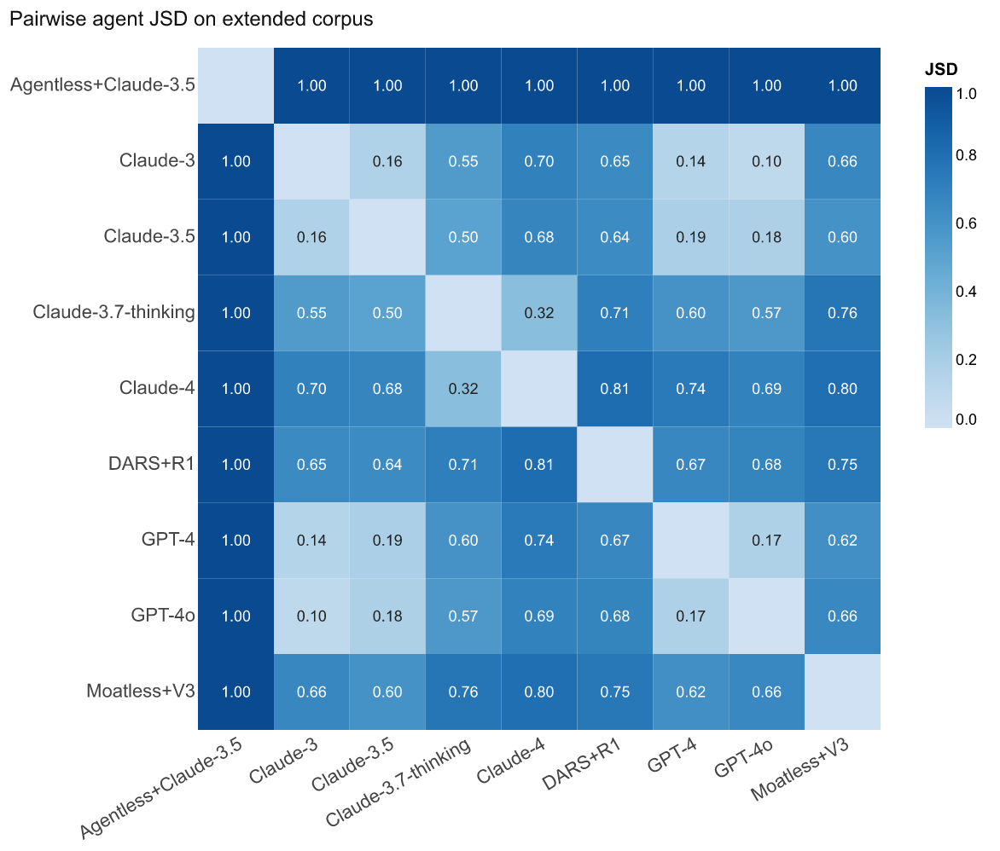
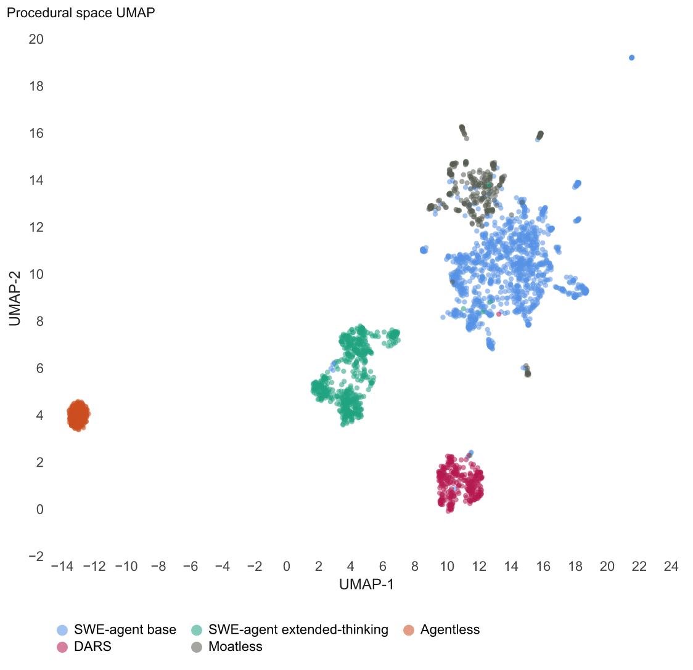
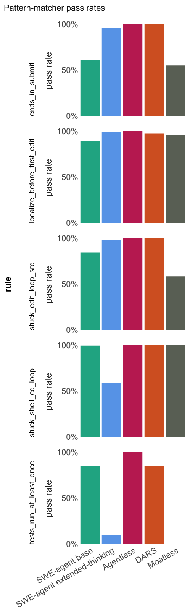

procgrep
What it does
The problem. Outcome metrics like SWE-bench pass or fail compress everything an agent does into one bit. Two agents can solve the same task in structurally different ways. Two agents that fail can fail differently. The procedural layer — the sequence of tool calls the agent makes on its way to an answer — holds this information, and outcome scores cannot see it.
What procgrep does. It takes the trace log of an LLM coding agent and produces a structural fingerprint of how the agent worked, not just whether it succeeded. Given fingerprints from many agents, you can answer one question with quantitative precision: do two agents, holding some factors fixed and varying others, work in structurally distinct ways?
How. Three steps, plain language. First, translate each scaffold's tool-call vocabulary into a shared one, so different agents can be compared at all. Second, learn a compact representation of the recurring patterns in those sequences. Third, compare any two groups of agents by how those patterns distribute. The technical primitives behind each step — byte-pair encoding, Jensen-Shannon divergence, leave-one-group-out probes, UMAP projection, regex-based pattern matching — are linked in the glossary below.
Provenance. The library was extracted from the analysis pipeline used in Procedural Grep: Structural Variation for Agent Rollouts, where it characterized the procedural fingerprints of nine LLM coding agents across five paradigm-by- scaffold cells on SWE-bench Verified.
The pipeline
Each operation is a pure function of typed data. The CLI mirrors the Python API; commands compose by reading and writing JSON or JSONL on disk.
- canonicalize raw scaffold traces become a canonical atom sequence
- fit_bpe the atom corpus yields a BPE motif vocabulary
- encode each trace becomes a motif-frequency fingerprint
- jsd_matrix pairwise Jensen-Shannon divergence between group-mean fingerprints
- probe · umap · patterns · stats predictive transfer, projection, rule matching, descriptive statistics
Three modes of use
Same library, three audiences. Each mode is documented with a runnable
example script under examples/python/ in the repository.
1. Research instrument
Characterize where procedural structure lives across a corpus of agents. Build the JSD matrix; run the leave-one-group-out probe; surface the block structure. This is the paper's primary mode.
The procedure:
- Collect traces from every agent. One JSONL per agent or one combined file.
- Canonicalize each agent's traces using the appropriate adapter (built-in or custom).
- Fit one shared BPE vocabulary across the whole corpus, so the vocabulary itself is not a confound between agents.
- Encode every trajectory as a fingerprint under the shared vocabulary.
- Build the pairwise JSD matrix grouped by cell, agent, or any label of interest.
- Run the leave-one-group-out probe to test cross-group predictive transfer.
- Optionally project the fingerprint space with UMAP for a visual companion.
from procgrep import canonicalize, encode, fit_bpe, jsd_matrix, leave_one_group_out, umap_project
from procgrep.io import read_jsonl
raw = list(read_jsonl("corpus.jsonl")) # traces from all agents
traces = canonicalize(raw, adapter="swe-agent")
vocab = fit_bpe((t.atoms for t in traces),
vocab_size=200, seed=0) # shared across all agents
fps = encode(traces, vocab=vocab)
matrix = jsd_matrix(fps, group_by="group") # block structure visible
probe = leave_one_group_out(fps, label_field="group") # predictive transfer
umap = umap_project(fps, granularity="trace", seed=0) # visual companion
What you get. A JSD matrix that shows block structureThe JSD matrix shows rectangular regions of low divergence (within-cell) along the diagonal and high-divergence rectangles between cells. The layout encodes the dominant grouping axis. with tight within-cell divergence vs large cross-scaffold divergence; a probe result that quantifies "the held-out group is structurally novel; the classifier cannot predict it." On the paper's nine-agent corpus, within-cell JSD lands at 0.10 to 0.19 and cross-scaffold JSD at 0.62 to 1.00.
2. Controlled-eval harness
Hold base model, scaffold, and benchmark fixed. Vary one factor (temperature, seed, RLHF variant, scaffold flag). Measure within-arm procedural consistency and across-arm sensitivity. The within-arm JSD is the noise floor; the across-arm JSD is the signal.
The recipe:
- Capture N traces per arm. N ≥ 30 is a safe default; the seed-sensitivity study in STUDIES.md establishes the principled floor.
- Label each trace with its arm via the
groupfield on the input record. - Fit a single shared BPE vocabulary across all arms; refitting per arm makes vocabulary an arm-specific confound and breaks the comparison.
- Encode all trajectories under that vocabulary.
- Compute pairwise JSD within each arm (the noise floor).
- Compute JSD between arm-mean fingerprints (the signal).
- Run leave-one-arm-out predictive transfer to test whether arms are structurally distinct.
from itertools import combinations
from procgrep import canonicalize, encode, fit_bpe, jsd, jsd_matrix, leave_one_group_out
from procgrep.io import read_jsonl
traces = canonicalize(list(read_jsonl("temp_sweep.jsonl")), adapter="swe-agent")
vocab = fit_bpe((t.atoms for t in traces), vocab_size=200, seed=0)
fps = encode(traces, vocab=vocab)
# Across-arm JSD: the signal of interest.
across = jsd_matrix(fps, group_by="group").to_array()
# Within-arm JSD: the noise floor against which `across` is interpreted.
arms = sorted({fp.group for fp in fps})
within = {arm: sum(jsd(a.distribution(), b.distribution())
for a, b in combinations([fp for fp in fps if fp.group == arm], 2))
for arm in arms}
probe = leave_one_group_out(fps, label_field="group", seed=0)
What you get. A calibrated signal-to-noise ratio. If across-arm JSD substantially exceeds within-arm JSD (rough rule of thumb: signal greater than twice the floor), the factor moved procedure. If the two are comparable, the factor sampled noise around the same procedural shape. The probe accuracy gives the predictive- transfer version of the same claim.
3. Deployment signal
Run the Level 1 pattern matcher on the procedural prefix of a running trajectory to flag runs heading toward known failure shapes (stuck edit loops, missing localize-before-edit, missing tests-before-submit) and interrupt before the budget burns.
The setup:
- Author a YAML rule file with the invariants that should hold mid-trajectory. Some rules are eagerly checkable on partial prefixes (no-long-edit-loops); others (ends-in-submit) only make sense at completion.
- Load the rule set once at process start.
- Inside the agent loop, at each new atom, build a prefix
Traceand callmatch_patternson the single-trace list. - Inspect the returned violations; act on the eager ones; let the completion-only ones inform a final report.
from procgrep import Trace, load_patterns, match_patterns
patterns = load_patterns("rules/deployment.yaml")
EAGER = {"no_long_edit_loops", "missing_localize"}
def check_prefix(trace_id, agent, group, atoms_so_far):
prefix = Trace(trace_id=trace_id, agent=agent, group=group, atoms=atoms_so_far)
report = match_patterns([prefix], patterns)
return [v for v in report.violations.get(trace_id, []) if v in EAGER]
# In the agent loop:
for step in agent.run():
current_atoms.append(step.atom)
violations = check_prefix(run.id, run.agent, run.group, current_atoms)
if violations:
log.warning("procgrep flagged %s at step %d", violations, step.idx)
agent.interrupt()
break
Example rule file:
rules:
- name: no_long_edit_loops
description: No run of 5+ consecutive edits without an intervening test.
pattern: "(edit ){5,}"
must_hold: false
- name: missing_localize
description: A localize atom must precede the first edit.
pattern: "(search_repo|find_file|open|nav) .*edit"
must_hold: true
What you get. A regex-on-canonical-atoms matcher that runs in milliseconds. Cheap enough to invoke on every step of a live agent. Limitation: regex over atom sequences cannot express temporal- logic invariants ("eventually X follows every Y"); that is the future procedural-DSPy DSL.
Quickstart
The Python API. Same shape as the bundled quickstart example; runs on the synthetic corpus in a few seconds.
from procgrep import canonicalize, encode, fit_bpe, jsd_matrix, leave_one_group_out
from procgrep.io import read_jsonl
# 1. Read raw traces.
raw = list(read_jsonl("traces/raw.jsonl"))
# 2. Canonicalize: scaffold-specific actions to shared atom alphabet.
traces = canonicalize(raw, adapter="swe-agent")
# 3. Fit BPE: learn motif vocabulary across the corpus.
vocab = fit_bpe((t.atoms for t in traces), vocab_size=200, seed=0)
# 4. Encode trajectories as motif-frequency fingerprints.
fingerprints = encode(traces, vocab=vocab)
# 5. Compare.
matrix = jsd_matrix(fingerprints, group_by="agent")
probe = leave_one_group_out(fingerprints, label_field="group", seed=0)
Or the equivalent CLI chain:
procgrep canonicalize --input traces/raw.jsonl --adapter swe-agent --output canonical.jsonl
procgrep fit-bpe --input canonical.jsonl --vocab-size 200 --output vocab.json
procgrep encode --input canonical.jsonl --vocab vocab.json --output fp.jsonl
procgrep jsd --input fp.jsonl --group-by agent --output jsd.json
procgrep probe --input fp.jsonl --label-field group --output probe.json
Install
git clone https://github.com/hamidahoderinwale/procgrep.git
cd procgrep
pip install -e ".[dev]"
pre-commit install
Python 3.10 or newer. No LLM SDKs; the library is post-hoc analysis only.
Capabilities
Eight first-class operations. All deterministic, all reproducible without loading a language model.
| Function | What it does |
|---|---|
canonicalize | Built-in adapters for SWE-agent, Agentless, DARS, Moatless; custom adapters via the TraceAdapter protocol. |
fit_bpe | Greedy BPE merge over atom sequences; deterministic tie-breaking; persisted vocabulary. |
encode | Motif-frequency distributions under a fixed vocabulary; L1-normalized on demand. |
jsd · jsd_matrix | Jensen-Shannon divergence (log base 2; values in [0, 1]) at any group granularity. |
umap_project | UMAP at trace or group granularity, seeded for reproducibility. |
leave_one_group_out | Predictive-transfer probe with sklearn LeaveOneGroupOut and multinomial logistic regression. |
match_patterns | Level 1 YAML rule format; regex over canonical atoms with must_hold semantics. |
| stats helpers | Atom frequencies per group, effective vocabulary size, per-trajectory entropy, discriminative motifs. |
Where procgrep fits
procgrep operates on the procedural layer (tool-call sequences), not the natural-language layer (prompts). It is complementary to DSPy, which operates on prompts, and to SWE-bench, which operates on outcomes.
| Layer | Instrument | What it controls or measures |
|---|---|---|
| Prompt / NL | DSPy | Compiles and optimizes the prompts an agent receives. |
| Procedural / tool-call | procgrep | Characterizes the tool-call trajectory the agent produces. |
| Outcome | SWE-bench, AgentBench | Scores pass/fail on benchmark tasks. |
The library does not depend on DSPy. The two are useful together: a researcher can optimize an agent with DSPy and use procgrep to measure whether the prompt-layer optimization produced a procedural- layer shift, or whether procedure is mostly determined by scaffold and base model rather than prompt.
Notes
Two design questions that come up often enough to address inline. The fuller treatment is in FAQ.md.
Why count-based fingerprints, not embeddings
Three reasons. Interpretability: each fingerprint dimension is a named motif, so JSD differences attribute to specific motifs that a reader can name and inspect. No model dependency: the fingerprint is deterministic and reproducible without loading a language model. Fidelity to the paper's framing: the paper argues procedure has discrete structure, and embedding atoms with a continuous language model would smear that structure into a similarity space. Embedding-based comparison is a legitimate alternative methodology and a candidate v0.2 capability, but it is not the choice the paper commits to.
The canonicalization-layer caveat
The procedural fingerprint reflects what the canonicalizer captures,
not the agent's full behavior. A direct audit of one Moatless trace
found 71 internal RunTests references inside the trace
content, zero of which surfaced as canonical atoms because the
Moatless adapter walks action_steps indexed by
action_args_class, and test executions live in a
different part of the planner tree.This is the worked example from the paper's §Threats. The corpus-level finding "Moatless has no test atoms" is therefore a canonicalization artifact, not a behavioral claim about Moatless. Read "tests run zero times in the trace" as a property of the
captured atom stream, not as a behavioral claim about what the agent
did outside that stream.
Sample runs and results
Two kinds of evidence: the bundled synthetic corpus reproduces in seconds on any machine, and the paper's nine-agent corpus shows what procgrep produces at scale.
On the bundled synthetic corpus
Running the quickstart example against
examples/synthetic_traces.jsonl (six trajectories, two
agents, two groups):
$ python examples/python/01_quickstart.py
loaded 6 raw records from synthetic_traces.jsonl
canonicalized into 6 traces
syn-001 agent=editor atoms=['edit', 'pytest', 'edit', 'pytest', 'submit']
syn-002 agent=editor atoms=['open', 'edit', 'pytest', 'submit']
syn-003 agent=searcher atoms=['search_repo', 'read_file', 'search_repo', 'edit', 'run_test', 'submit']
syn-004 agent=editor atoms=['edit', 'edit', 'edit', 'edit', 'edit', 'edit', 'submit']
syn-005 agent=searcher atoms=['search_repo', 'search_repo', 'read_file', 'submit']
syn-006 agent=editor atoms=['edit', 'run_test', 'edit', 'run_test', 'edit', 'run_test', 'submit']
learned vocabulary: 5 atoms + 6 merges = 11 tokens
encoded 6 fingerprints; each of dimension 11
pairwise JSD by agent (upper triangle only):
editor vs searcher JSD = 0.7415
Two agents with disjoint procedural styles; JSD lands near the maximum (1.0 is the ceiling under log base 2). That is the metric behaving as expected.
On the paper's nine-agent corpus
Three figures from the analysis pipeline procgrep was extracted from. Same code path, ~2,639 trajectories instead of six.



Concepts in detail
Two methodological choices that load most of the work. Plain-language explanations, formulas, and runnable snippets for each.
BPE on atom sequences
Byte-pair encoding (BPE) was originally designed to break English text into subword pieces. The algorithm has nothing to do with text; it operates on any discrete sequence. procgrep applies it to sequences of action atoms instead. Each pass finds the most frequent adjacent pair, glues it into a single new token, and adds the merge to a learned vocabulary. The result is a compact alphabet that captures both single atoms and the most common multi-atom patterns in the corpus.
What that looks like on one trajectory:
# Raw atom sequence from one trajectory:
[SEARCH, EDIT_SRC_PY, RUN_PYTHON_TEST_PY, EDIT_SRC_PY, RUN_PYTHON_TEST_PY, EDIT_SRC_PY, SUBMIT]
# Pass 1: the most frequent adjacent pair across the corpus is
# (EDIT_SRC_PY, RUN_PYTHON_TEST_PY). Glue it.
[SEARCH, EDIT_SRC_PY+RUN_PYTHON_TEST_PY, EDIT_SRC_PY+RUN_PYTHON_TEST_PY, EDIT_SRC_PY, SUBMIT]
# Pass 2: the most frequent adjacent pair is now
# (EDIT_SRC_PY+RUN_PYTHON_TEST_PY, EDIT_SRC_PY+RUN_PYTHON_TEST_PY). Glue it.
[SEARCH, edit_test_loop, EDIT_SRC_PY, SUBMIT]
# After K passes, the vocabulary contains all base atoms plus
# K named multi-atom motifs. Each trajectory now has a much
# shorter, more structurally informative encoding.
In code:
from procgrep import fit_bpe, apply_vocab
atoms = [
["SEARCH", "EDIT_SRC_PY", "RUN_PYTHON_TEST_PY", "EDIT_SRC_PY",
"RUN_PYTHON_TEST_PY", "EDIT_SRC_PY", "SUBMIT"],
# ... many more trajectories ...
]
vocab = fit_bpe(atoms, vocab_size=200, seed=0)
tokens = apply_vocab(atoms[0], vocab)
print(len(tokens), tokens)
The headline trade-off: a larger vocabulary captures more nuanced
patterns but with diminishing returns. The paper sweeps
vocab_size and finds the JSD matrix stabilizes well
before V=200; the default in procgrep reflects that empirical knee.
Jensen-Shannon divergence
JSD measures how different two probability distributions are. The
idea, in plain language: take the average of the two distributions,
then measure how far each one is from the average; combine. The
quantity is symmetric (the order of inputs does not matter) and
bounded (with log base 2, JSD lies in [0, 1]), which
makes it well-behaved as a comparison metric.
The definition:
JSD(P, Q) = ½ · KL(P ‖ M) + ½ · KL(Q ‖ M), where M = (P + Q) / 2
Three reference points for intuition:
- JSD = 0 when P and Q are identical. The fingerprint of an agent compared to itself.
- JSD ≈ 0.15 in the paper's data: two agents in the same paradigm-by-scaffold cell (Claude-3 vs Claude-3.5 under SWE-agent).
- JSD ≈ 1.0 when P and Q put their mass on disjoint motifs. The paper's Agentless vs SWE-agent comparison reaches this ceiling.
In code:
from procgrep import jsd
# Two fingerprints, three-motif vocabulary:
p = [0.5, 0.3, 0.2] # editor: heavy on edit, run_test, submit
q = [0.1, 0.2, 0.7] # searcher: heavy on search and read
print(jsd(p, q)) # ≈ 0.42 — substantial difference, not maximal
print(jsd(p, p)) # 0.0 — identical
print(jsd([1, 0], [0, 1])) # 1.0 — disjoint with log base 2
Why JSD specifically: it is the standard interpretable, bounded, symmetric divergence for comparing two probability distributions. The procgrep paper uses log base 2 throughout so reported JSD values are directly comparable across corpora and across vocabulary sizes.
Suggested studies
Five studies the library is well-suited to. Each uses the existing public API; no new code required. Descriptions in STUDIES.md.
- Temperature-sweep procedural phase transition. Sweep T in {0, 0.2, 0.4, 0.6, 0.8, 1.0}; identify the knee where across-arm JSD spikes.
- Success-vs-failure procedural prefix signature. Train a classifier on the first K atoms of each trajectory; report accuracy vs K for outcome prediction.
- DSPy compile-time procedural audit. Capture traces before and after a DSPy compile; measure whether the NL-layer optimizationPrompt-and-demonstration tuning at the natural-language interface, typically by DSPy. Distinct from any change to the agent's tool-call vocabulary; that would be a procedural-layer optimization. shifted the procedural fingerprint.
- Reasoning-budget sweep. Vary max-thinking-tokens; map the procedural-shape response.
- Pattern-matcher cross-validation. Run rule-based pattern matching against an existing BPE-derived analysis; compare second-method results.
Glossary
Terms used throughout this page and in the paper, with hyperlinks to upstream references for the methodological concepts.
- Adapter
- A callable that converts one scaffold's raw trace record into a
canonical atom sequence. See
procgrep.canonicalizefor built-ins (SWE-agent, Agentless, DARS, Moatless) andexamples/python/05_custom_adapter.pyfor a worked example. - Atom
- A canonical action label: the shared alphabet across scaffolds.
Examples:
SEARCH,EDIT_SRC_PY,RUN_PYTHON_REPRO_PY,SUBMIT. - BPE motif
- A token in the learned vocabulary. May be a single atom or a
glued multi-atom sequence (e.g.,
edit_run_test). Algorithm: Sennrich, Haddow, Birch (ACL 2016), applied here at the atom layer rather than the subword layer. - Canonical
- Used in the programming-language-theory sense of canonical form: a unique standard representation obtained by normalizing away surface variation. Different scaffolds emit different action names; all map to the same canonical atom.
- Cell
- A paradigm × scaffold combination used as the comparison unit. Examples: SWE-agent base, SWE-agent extended-thinking, Agentless, DARS, Moatless.
- Controlled eval
- Hold base model, scaffold, and benchmark fixed; vary one factor; capture N traces per arm. Within-arm JSD is the noise floor; across-arm JSD is the signal. See README §5.
- DSPy
- A framework for programming foundation models (Khattab et al., ICLR 2024). Operates on the natural-language layer; procgrep operates on the procedural layer. Complementary, not competing.
- Fingerprint
- One trajectory expressed as a count vector over BPE motif tokens, normalized to a probability distribution. The unit of comparison.
- Jensen-Shannon divergence
- JSD
is a symmetric, bounded relative of KL divergence. Values in
[0, 1]with log base 2. Computed pairwise between fingerprints. Lin (IEEE TIT 1991) is the original reference. - Leave-one-group-out probe
- A classifier trained on K-1 groups and tested on the held-out group, via scikit-learn's LeaveOneGroupOut. Tests predictive transfer. The paper's headline cross-scaffold result is 0 of 300 correct.
- Pattern matcher (Level 1)
- Regex over the space-joined atom sequence with a
must_holdflag. procgrep ships this; the Level 2 compositional invariant DSL with temporal operators (procedural-DSPy) is named in ROADMAP.md as future work. - Scaffold
- The software harness around the LLM that mediates tool use. The paper covers four: SWE-agent, Agentless, DARS, Moatless.
- SWE-bench
- The benchmark the paper's corpus is built on (Jimenez et al., ICLR 2024). 300 instances on the Verified split.
- Trace · trajectory
- An agent's recorded sequence of tool calls on one task. The raw input to procgrep.
- UMAP
- Uniform Manifold Approximation and Projection (McInnes, Healy, Melville, 2018). Used here to project fingerprints into 2D for visual inspection.
- Vocabulary
- The full set of motif tokens learned by BPE over the corpus. Fixed once and shared across all fingerprints. The "shared vocabulary discipline" in controlled evals refers to fitting one vocab across all arms rather than per-arm.
- Within-arm vs across-arm JSD
- Two quantities reported together in a controlled eval. Within-arm is the pairwise JSD between fingerprints of the same arm (noise floor). Across-arm is the JSD between arm-mean fingerprints (signal). Rule of thumb: signal substantially exceeding the floor (about 2x) means the factor moved procedure.
Documentation
| README.md | Capabilities, modes of use, examples per mode. |
| STUDIES.md | Ranked case studies the library enables. |
| FAQ.md | DSPy positioning, count-vs-embedding rationale, canonicalization-layer caveat. |
| ROADMAP.md | What is and is not on the path. |
| CONTRIBUTING.md | Dev environment, code style, PR conventions. |
Citing
The repository ships CITATION.cff;
GitHub renders a "Cite this repository" button from it. The paper
this library was extracted from is the primary citation target;
both citations should appear on the first paper release.